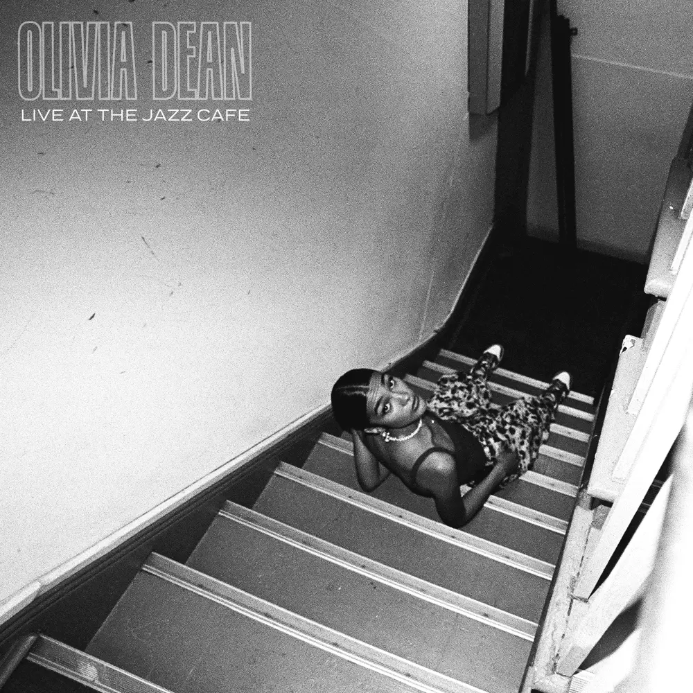

Album#25
Live At The Jazz Cafe
{kind=link}

专辑信息
- 专辑名称：Live At The Jazz Cafe
- 歌手：Olivia Dean
- 年份：2021-10-22
- 风格：R&B、Neo-Soul、live、流行
- 时长：约 35 分钟

本来打算听 Olivia Dean 2025 年的专辑《The Art of Loving》，在第一首的「The Art of Loving (Intro)」 里有人推荐看看她的「Live At The Jazz Cafe」，我就先去找来看了看，当「Echo」的管乐旋律响起，当 Olivia Dean 迷人的嗓音唱出第一句歌词，我就喜欢上这场 live 了，于是决定先听完这场 live。
歌曲的风格应该是 R&B 或者 Neo-Soul，管乐（小号、长号、萨克斯）、电钢琴、鼓、贝斯等组成的编曲太好听了， Olivia Dean 的声音也很迷人，她的造型也很好看，一不小心就沉醉在这场 live 中，推荐一看，推荐一听！
Olivia Dean 还会让我想到之前听的 Cleo Sol，两人的音乐感觉有一些相似的地方，如果你喜欢 Olivia Dean，或许也会喜欢 Cleo Sol。
Tracklist
Echo
I took 5 on the way home
Called you for a little piece of mind
Was out lookin’ for some healin'
But it seemed a little hard to find
No man’s an island, do you not see
That I need you?
As you need me
A year, months, any weekend
Is no match for my loyalty
I’m sweet, jumping to your defence
Question would you do the same for me
They say distance can make the heart grow fonder
But for you I wonder
‘Cause if I’m not by your side
Are you still on mine?
I was on the way down
I’ve been on my knees this whole week
So when I need you most
Will you be my echo?
I was feelin’ drowned out
Searchin’ for some sweet relief
So whеn I need you most
Will you be my echo?
(Will you be my еcho?)
You don’t have to move a mountain
Just take a little weight off me
Fix up and be about it
‘Cause my love is not a one way street
They say distance can make the heart grow fonder
But for you I wonder
‘Cause if I’m not by your side
Are you still on mine?
I was on the way down
I’ve been on my knees this whole week
So when I need you most
Will you be my echo?
I was feelin’ drowned out
Searchin’ for some sweet relief
So when I need you most
Will you be my echo?
Will you be my echo?
Will you be my echo?
Will you be my echo?
I was feelin’ drowned out
Searchin’ for some sweet relief
So when I need you most
Will you be my echo?
Will you be my echo?
Will you be my echo?
Will you be my echo?
Will you be my echo?
歌词大意
打车回家的路上
试图打给你整理思绪
想要得到一些慰藉
但看起来似乎有些困难
你难道不明白 没人是一座孤岛
所以我需要你
就像你需要我一样
一年，几个月，无数个周末
都无法与我的忠诚抗衡
我是如此心软的为你找借口
问题是你是否也会为我着想
都说距离产生美
但我不以为然
如果我不在你身边
你是否还忠于我
一路坠入深渊
不断的退让和委曲求全
在我最需要的你的时候
你会成为我的依靠吗？
感觉快要窒息
需要一丝慰藉
所以在我最需要你的时候
你会成为我的依靠吗？
（你会成为我的依靠吗？）
你不需要竭尽全力去创造奇迹
只是帮我分担一些压力
足以拯救我于水火之中
希望不是我一味的付出
都说距离产生美
但我好奇你是否也是这样？
因为如果我不在你身边
你还会忠于我吗
我一路坠入深渊
不断的退让和委曲求全
所以当我最需要你的时候
你会成为我的依靠吗？
一路坠入深渊
寻找一线生机
当我最需要你的时候
你会成为我的依靠吗？
你会成为我的依靠吗？
你会成为我的依靠吗？
你会成为我的依靠吗？
感觉快要窒息
寻找一线生机
当我最需要你的时候
你会成为我的依靠吗？
你会成为我的依靠吗？
你会成为我的依靠吗？
你会成为我的依靠吗？
你会成为我的依靠吗？
管乐演奏的旋律爱了，太好听了。
But for you I wonder
‘Cause if I’m not by your side
Are you still on mine?
从歌词看，大概是对方出轨了？
亦或是比较欠缺安全感，不确定对方是否会忠于自己。
So when I need you most
Will you be my echo?
Be My Own Boyfriend
Oh, I can't do this anymore
I don't wanna get involved, no
With all these men I'm so much better than
Maybe it's a little cold
But I think I could play the role 'cause
No one can love me the way I can
Catch me out in Paris on my ones
Stay up dancing 'til the dance is done
I got me, I don't need anyone (I don't need anyone)
Hold me close
Love myself the most
Lately, I've been just what I need
Stole my heart and I'm gonna be my own boyfriend
Be my own boyfriend
Lately, I've been just what I need
Be my baby, I'm
Gonna bе my own boyfriend
Oh, I could save myself thе stress
Wear the trousers and the dress, yeah
Girl, you look so goddamn good tonight
And I say that with my chest
You and me could be the best
I can do whatever whenever the fuck I want
Hold me close
Love myself the most
Lately, I've been just what I need
Stole my heart and I'm gonna be my own boyfriend
Be my own boyfriend
Lately, I've been just what I need
Be my baby, I'm
Gonna be my own boyfriend
Be my own boyfriend
Be my own boyfriend
Be my own boyfriend
I'm gonna be my own boyfriend
Be my own boyfriend (Be my own boyfriend)
Lately, I've been just what I need
Be my baby, yeah
Gonna be my own boyfriend
歌词大意
我再也无法继续这样
不愿再陷入感情漩涡
那些男人根本配不上我
或许这样有些冷漠
但我能完美扮演这个角色
因为没人比我更懂如何爱我
独自漫步巴黎街头
尽情舞动直到曲终
有我自己就已足够（我不需要任何人）
紧紧拥抱我
最爱是自我
最近我终于明白
偷走我的心 我要成为自己的恋人
做自己的男友
最近我终于明白
做我的宝贝
我要成为自己的恋人
何必自寻烦恼
可盐可甜多美妙
姑娘你今晚美得冒泡
我敢拍着胸脯保证
我们才是最配的一对
随时随地随心所欲才最对味
紧紧拥抱我
最爱是自我
最近我终于明白
偷走我的心 我要成为自己的恋人
做自己的男友
最近我终于明白
做我的宝贝
我要成为自己的恋人
做自己的男友
做自己的男友
做自己的男友
我要成为自己的恋人
做自己的男友（做自己的男友）
最近我终于明白
做我的宝贝
我要成为自己的恋人
"Being in a relationship is so nice, it's super nice, but also you're whole by yourself. You don't need another half. Yeah. This is a song for any need to feel like that."
「谈恋爱真的很美好，超级美好，但同时，你本身就是一个完整的个体，你不需要另一半来使你完整。这首歌送给那些需要这种感觉的人。」
真是温暖呢。
贝斯的节奏很好听！吉他、键盘、鼓的节奏都很迷人！当然 Olivia 的歌声也是，太醉人了。
Baby Come Home
I wanna fall into arms like lovers do
I'm missing my sweet something
I wanna talk with you but this phone won't do
I need you here one-hundred
Baby come home I got it bad for you
I'm no good alone at three in the afternoon
Baby I need more than a word from you
I can't stop singing your song
It always plays when you're gone
I made you a coffee, I don't know why
Thought I heard the doorbell a couple times
Running on restless, how silly I?
Somehow our room don't feel the same
Without your love, it's just a space
And every hour is overtime
Baby come home, I got it bad for you
I'm no good alone at three in the afternoon
baby I need more than a word from you
I can't stop singing your song
It always plays when you're gone
Hey how's your day been?
Boy you save me on the daily oh
You are some supernatural high
Can't say no
Oh how the day goes
Oh how the day goes, my love
Baby come home, I got it bad for you
I'm no good alone at three in the afternoon
Baby I need more than a word from you
I can't stop singing your song
歌词大意
我想沉溺于恋人般的拥抱
思念着我亲爱的某某
想与你倾诉 但电话远远不够
我需要你百分百的陪伴
亲爱的快回来 我为你深深沦陷
午后三点我独自难以承受
宝贝 我需要的不止只言片语
你的旋律在我脑海循环
每当你不在这首歌就会响起
莫名为你煮了杯咖啡
恍惚间听见门铃反复叮咚
焦躁不安地奔跑 多傻气呀
我们的房间不再完整如初
没有你的爱，这里只是一个空洞
每一小时都像是在煎熬度日
亲爱的快回来 我为你深深沦陷
午后三点我独自难以承受
宝贝 我需要的不止只言片语
你的旋律在我脑海循环
每当你不在这首歌就会响起
嘿 今天过得怎样？
男孩，你每天都让我心动不已
你就像超自然的迷幻剂
让我无法抗拒
时光如何流转
亲爱的 时光如何流转啊
亲爱的快回来 我为你深深沦陷
午后三点我独自难以承受
宝贝 我需要的不止只言片语
你的旋律在我脑海循环
"Um… This next one, came out in lockdown. I recorded the vocals in my bedroom, and I shot the music video in my garden. So it's got a very special place in my heart for that reason. And it's about missing someone that you love. I think we can all relate, we've been through it this year."
「嗯……下面这一首，在封锁期间发布。我在卧室里录制了人声，并在我的花园里拍摄了音乐录影带。因此，出于这个原因，它在我心中占有非常特殊的位置。这首歌是关于思念你所爱的人。我想我们都能感同身受，毕竟这一年我们都经历过。」
这首歌的器乐比较简单，只有吉他和键盘，吉他的旋律缓缓的也很好听，很好地衬托了 Olivia 的声音。
Slowly
Down in Margate, had a sip of you
And it went straight to my head
I could have opened up, cried and almost been myself
But I took the piss instead
I find it hard
Hard to be soft
Stop saying I'm perfect
Coz clearly I'm not
Just need to catch
Catch my breath
Go slowly, slowly
I know you're not supposed to know me
But I only see it when you show me slowly
I'll have to teach you how to hold me
So go on, hold me
Remember when you called us both a cab
And forgot you had your bike?
And the whole way to home, I thought
"How's he keeping up with me?
He must be really into me"
As I fight the urge to fly
I find it hard
Hard to be soft
Stop saying I'm perfect
Clearly I'm not
Just need to catch
Catch my breath
Go slowly, slowly
I know you're not supposed to know me
But I only see it when you show me slowly
I'll have to teach you how to hold me
So go on, hold me
Go slowly, slowly
I know you're not supposed to know me
But I only see it when you show me slowly
I'll have to teach you how to hold me
So go on, hold me
And maybe I'll be fine this time
And I'll let you see me in the light
Yeah, maybe I'll be fine
歌词大意
在马盖特市，与你浅尝辄止
令我头晕目眩
我本可以敞开心扉、哭泣、做我自己
但我以自嘲代之
磨平棱角
十分艰难
停止你敷衍的恭维
那些词语明显与我无关
我只需要
找回呼吸的节奏
慢慢来，慢慢来
我们本应没有交集
但只有你不断暗示时我才有所意识
我一定会教你如何拥抱我
所以继续，抱紧我
还记得那时我们同乘一辆出租吗
你难道忘记了你的单车
回家的路上，我一直在想
「他为什么要与我同行？」
「他一定真心为我着迷。」
我强忍住雀跃的冲动
磨平棱角
十分艰难
停止你敷衍的恭维
那些词语明显与我无关
我只需要
找回呼吸的节奏
慢慢来，慢慢来
我们本应没有交集
但只有你不断暗示时我才有所意识
我一定会教你如何拥抱我
所以继续，抱紧我
慢慢来，慢慢来
我们本应没有交集
但只有你不断暗示时我才有所意识
我一定会教你如何拥抱我
所以继续，抱紧我
也许这次一切都好
你会认识真正的我
也许我会安然无恙
"It is about…I think maybe when I was a little bit younger, I thought that I needed to be in this really tumultuous relationship, and, like, it was gonna be really dramatic and sexy and whatever, and actually I was just unhappy. And I think I've decided now, that I just want to fall in love in a normal and just ordinary, and beautiful way. I think ordinary things are very beautiful. So this is a song that exists in that world of thought, and it's called Slowly."
「这是关于…我想当我年轻一点的时候，我以为我需要一段非常动荡的关系，它会非常戏剧化和性感之类的，但实际上我并不开心。我想现在我已经决定了，我只想以正常、普通、美丽的方式坠入爱河。我认为平凡的事物非常美丽。所以这是一首存在于那个思想世界中的歌，它叫做 Slowly。」
这首是 Olivia Dean 自己弹奏着键盘演唱的曲子，正如歌名「Slowly」，整首歌也是慢慢的，缓缓的，沉浸在情绪里。
What Am I Gonna Do On Sundays
What am I gonna do on Sundays
You'd throw the curtain wide
And I wouldn't mind
The sky of only clouds
Sheltering in that subway
We'd proper painful laugh
And see how long we can make a tenner last
I'm gonna miss you having something to say about everyone
Ruining my jokes coming up with a better one
Leaving all this might be easier said than done
But it's a fight that you could have won
You can keep the rain
But let me have the Sundays
That's something I can't bare to lose
No need to pretend
That all we had was Sundays
We had our share of Mondays too
I thought you'd fight a little harder for me
I thought you'd fight a little harder for me
Tired on the train this morning
Who'm I gonna tell about my day from hell
Who's gonna talk me down
I'll mostly miss the boring
The walk from your house
To that cafe you're always on about
But too bad
Couldn't see what you had in front of you
I did what I had to do
You can keep the rain
But let me have the Sundays
That's something I can't bare to lose
No need to pretend
That all we had was Sundays
We had our share of Mondays too
I thought you'd fight a little harder for me
I thought you'd fight a little harder for me
Fight a little harder for me
I thought you'd fight a little harder for me
歌词大意
没有你的周日我该如何度过
你总会拉开窗帘
而我从不介意
满天阴云的天空
躲在地铁站里避雨
我们笑得没心没肺
盘算着十英镑能撑多久
我会怀念你对每个人评头论足的样子
拆穿我的笑话 再说个更妙的
抽身离开总是说来容易
这本是你该赢的战役
你可以留住雨天
但请把周日留给我
那是我无法承受的失去
不必假装
我们只有周日温存
周一也共享过晨昏
我以为你会为我更奋力争取
我以为你会为我更奋力争取
今晨在疲惫的列车上
该向谁倾诉这糟糕的一天
谁来安抚我的情绪
最怀念那些平淡时光
从你家步行
到你总挂在嘴边的咖啡馆
多可惜
你看不见眼前的珍贵
我只是做了该做的抉择
你可以留住雨天
但请把周日留给我
那是我无法承受的失去
不必假装
我们只有周日温存
周一也共享过晨昏
我以为你会为我更奋力争取
我以为你会为我更奋力争取
为我更奋力争取啊
我以为你会为我更奋力争取
一首关于分手的歌。
这首开始，管乐回归了，又有好听的管乐了。
Cross My Mind
Know I read your text
And it ain't hard to reply
But I ain't ready yet
Too many reasons, give me reason not to try
Yeah, I could run to you
But then they'd all see me fall
You're a love I don't wanna lose
Too many reasons and a reason not to call
I'm only making it harder
I love it when you cross my mind
Know I'm thinking about ya
I love it when you cross my mind
But sometimes I forget what I need
If you can't get hold of me
Remember I told ya
I love it when you cross my mind
[horns]
It don't come easy to me
Though I seem in control
You said I'm hard to read
But it's hard for me
I can't even read myself sometimes
And I'm only making it harder
I love it when you cross my mind
Know I'm thinking about ya
I love it when you cross my mind
But sometimes I forget what I need
If you can't get hold of me
Remember I told ya
I love it when you cross my mind
[horns]
歌词大意
我知道我已经读了你的消息
它其实不难回复
但我还没准备好
太多原因让我望而却步
是，我可以奔向你
但他们都会看到我跌倒在半途
你是我心上所爱，我不愿失去
但太多原因，让我不愿拨通你的号码
我只不过为自己徒增烦恼
我喜欢你出现在我脑海
我知道我在想念你
我喜欢你闯入我的思绪
但有时我会忘记该如何
当你无法抱住我
请记得我曾告诉你
我喜欢你闯入我的思绪
这对我也并不简单
即便我看起来掌控全局
你说你看不透我
对我也一样难
我又何尝能看透我自己
我只不过为自己徒增烦恼
我喜欢你出现在我脑海
我知道我在想念你
我喜欢你闯入我的思绪
但有时我会忘记该如何
当你无法抱住我
请记得我曾告诉你
我喜欢你闯入我的思绪
The Hardest Part
Call me up to meet you, static on the phone
Normally I need you, this time I don't wanna go
Lately, I've been growing into someone you don't know
You had the chance to love her, but apparently you don't, no, you don't
So even if I could, wouldn't go back where we started
I know you're still waiting, wondering where my heart is
Pray that things won't change, but the hardest part is
You're realizing maybe I, maybe I ain't the same
And what you're waiting for ain't there no more anyway
Held you up so highly, deep under your spell
Your opinions would define me, this time I made some for myself
'Cause lately, I've been certain, there's no further to go
Yeah, you had the chance to love me, but apparently you won't, no, you won't
So even if I could, wouldn't go back where we started
I know you're still waiting, wondering where my heart is
Pray that things won't change, but the hardest part is
You're realizing maybe I, maybe I ain't the same
And what you're waiting for ain't there no more anyway
And it's okay
I'm not gonna remember you that way
You say I'm different now like that's so strange
But I was only 18
You should've known that I was always gonna change
So even if I could, wouldn't go back where we started
I know you're still waiting, wondering where my heart is
Pray that things won't change, but the hardest part is
You're realizing maybe I, maybe I ain't the same
Ain't there no more (I ain't there no more)
I ain't there no more
Ain't there no more (I ain't there no more)
I ain't there no more
Ain't there no more (I ain't there no more)
But the hardest part is
You're realizing maybe I, maybe I ain't the same
And what you're waiting for ain't there no more anyway
歌词大意
电话杂音中你约我相见
往日我总需要你 这次却不愿赴约
最近我逐渐变成 你陌生的模样
你本有机会爱她 却终究没能把握
即便能够重来 也不回最初起点
我知道你仍在等待 揣测我心之所向
祈祷一切如旧 但最煎熬的是
你终于明白我已 不再是当初的我
你所期待的早已 消失无踪
曾将你奉若神明 深陷你的魔力
你的评价定义我 这次我为自己做主
因我最近已确信 前路再无可能
你本有机会爱我 却终究不愿把握 不愿把握
即便能够重来 也不回最初起点
我知道你仍在等待 揣测我心之所向
祈祷一切如旧 但最煎熬的是
你终于明白我已 不再是当初的我
你所期待的早已 消失无踪
不过没关系
我不会以那种方式铭记你
你说我变了 仿佛多么奇怪
可我那时才十八岁
你早该知道 我永远都会改变
哪怕可以重来，我也不愿回到起点
我知道你仍在等待 揣测我心之所向
祈祷一切如旧 但最煎熬的是
你终于明白我已 不再是当初的我
早已消失（我已不复存在）
我已不复存在
早已消失（我已不复存在）
我已不复存在
早已消失（我已不复存在）
但最煎熬的是
你终于明白我已 不再是当初的我
你所期待的早已 消失无踪
"This one, I like to think of it as a positive breakup song. And it is about sometimes you love someone loads and you're growing together, you're growing, growing, growing, and then you just do all the growing that you can do together, and you have to go separate ways, but accepting that can be the hardest part."
「这一首，我喜欢把它看作是一首积极的疗愈情歌。它是关于有时候你深爱着某个人，你们在一起共同成长，不断地成长，成长，成长，然后你们一起完成了所有能共同实现的成长，接着你们不得不分道扬镳，但接受这一点往往是最难的部分。」
Reason To Stay
You've given your statement
The place and the time
You said, "A misunderstanding that's all it was"
I should believe you, we can't build love on a lie
But I'm starting to doubt you, I wonder why
If you say you love me, don't go and waste my time
If you want my love you better mean it
One of these days, if you can't behave
I'm leaving if you leave me no reason
If you say you love me, don't go play on my mind
If you promise me you better keep it
One of these days, if you can't behave
I'm leaving if you leave me no reason to stay
[horns]
It's cool to be honest
It don't cost you to care
You know trust is a virtue that we should share
I'd never deceive you
I hope you'd treat me the same
But I'm starting to question what you say
If you say you love me, don't go and waste my time
If you want my love you better mean it
One of these days, if you can't behave
I'm leaving if you leave me no reason
If you say you love me, don't go play on my mind
If you promise me you better keep it
One of these days, if you can't behave
I'm leaving if you leave me no reason to stay
[horns]
Give me a reason to, I need a reason to
Give me a reason to, I need a reason to
Give me a reason to, I need a reason to
If you say you love me, don't go and waste my time
If you want my love you better mean it
One of these days, if you can't behave
I'm leaving if you leave me no reason
If you say you love me, don't go play on my mind
If you promise me you better keep it
One of these days, if you can't behave
I'm leaving if you leave me no reason to stay
One love can't be, ah~
歌词大意
你已陈述完毕
时间地点清晰
你说「只是误会一场」
我该相信你 谎言筑不起爱巢
但怀疑开始滋长 不知为何
若说爱我 就别浪费时光
想要我的爱 请拿出真心
总有一天 若你仍不知收敛
我会离开 若你给不了理由
若说爱我 就别玩弄我心
既然承诺 就要说到做到
总有一天 若你仍不知收敛
我会离开 若你给不了留下的理由
坦诚其实很简单
关心又不要代价
你知道信任是美德
该由我们共享
我绝不会欺骗你
望你待我亦如是
但你的话 我开始质疑
若说爱我 就别浪费时光
想要我的爱 请拿出真心
总有一天 若你仍不知收敛
我会离开 若你给不了理由
若说爱我 就别玩弄我心
既然承诺 就要说到做到
总有一天 若你仍不知收敛
我会离开 若你给不了留下的理由
给我个理由 我需要个理由
给我个理由 我需要个理由
给我个理由 我需要个理由
若说爱我 就别浪费时光
想要我的爱 请拿出真心
总有一天 若你仍不知收敛
我会离开 若你给不了理由
若说爱我 就别玩弄我心
既然承诺 就要说到做到
总有一天 若你仍不知收敛
我会离开 若你给不了留下的理由
爱一个人应该真诚、坦诚，而不是欺瞒，既不要欺瞒对方，也不要欺瞒自己的心。
是否在欺瞒，对方其实是能感觉到的，当怀疑越来越重时，爱或许就不复存在了。
管乐依然很好听！